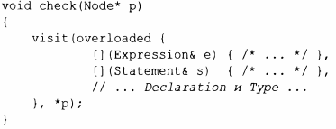

⇐13.5 Альтернативы 13.5.2 optional⇒
variant<A, В, С> зачастую является более удобной и безопасной альтернативой явному использованию union (§2.4). Возможно, простейшим примером применения является возврат либо значения, либо кода ошибки:
При присваивании или инициализации variant значением он запоминает тип этого значения. Позже мы можем узнать, какой именно тип содержит variant, и извлечь значение. Например:
Этот стиль нравится некоторым программистам, которым не нравятся исключения (см. §3.5.3), но есть и более интересные применения variant. Например, простому компилятору может потребоваться различать разные виды узлов с разными представлениями:
Такая схема проверки альтернатив для принятия решения о соответствующих действиях настолько распространена и относительно неэффективна, что заслуживает непосредственной поддержки:
Это в основном эквивалентно вызову виртуальной функции, но потенциально быстрее. Как и во всех случаях, в которых критична производительность, это ''потенциально быстрее" следует проверять измерениями. Для большинства применений разница в производительности незначительна.
К сожалению, нужен overloaded, который не является стандартным. Это "кусок магии", который создает множество перегрузки из набора аргументов (обычно - лямбда-выражений):
"Посетитель" visit применяет () к overload, который в соответствии с правилами вывода выбирает наиболее подходящее лямбда-выражение для вызова.
Правила вывода - это механизм для разрешения тонких неоднозначностей, прежде всего для конструкторов шаблонов классов в фундаментальных библиотеках (§6.2.3).
Если мы попытаемся обратиться к variant, хранящему тип, отличный от ожидаемого, то будет сгенерировано исключение bad_var iant_access.